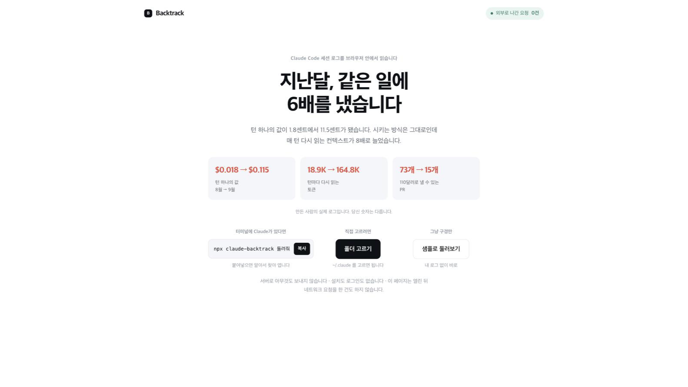
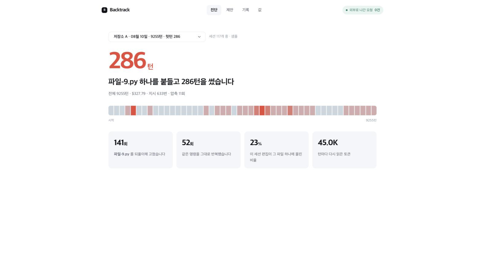
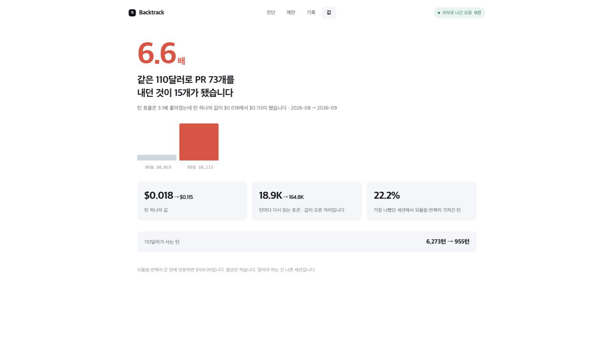

visual-format.md(2026-09-23 확정)가 personal-project-page 스킬(2026-09-14)보다 나중에 생겼고, 둘이 어긋나는 자리가 있다. 같은 내용(Backtrack 소개 첫 화면 + 「쌓인 기록」 절)을 세 판으로 그렸다. 글과 숫자는 셋 다 같다.
시안을 보기 전에, 두 규칙이 실제로 부딪히는 곳만 추렸다.
| 무엇 | 지금 사이트 | visual-format.md |
|---|---|---|
| 글꼴 | 정해졌다 (2026-09-25) — 제목 페이퍼로지, 본문 SUITE, 둘 다 고딕. 규칙의 「제목 명조」도 사이트의 옛 「본문 명조」도 아닌 제삼의 답으로 갔다. 네 판이 같은 글꼴을 쓰므로 이제 이 축은 시안을 가르지 않는다 | |
| 강조색 | 절 제목 황토 #8a6a3c | 강조 하나 파랑 #2B59C3 |
| 가운뎃점 | 머리말·캡션에 전면적으로 씀 | 장식용 가운뎃점 안 씀 |
| 본문 폭 | 한 단 40rem | 바깥 1600px · 탭 · 두 단(글 왼쪽 그림 오른쪽) |
| 첫 화면 | 훅 → 숫자 Hero → 그림 | 결론 한 줄 → 대표 그림 → 근거 |
| 밤 화면 | 토큰으로 자동 전환 | 라이트 고정 |
| 차트 | 규칙 없음 (Hero 타일·Nums) | 내용별 지정 — 전후는 나란히 막대, 추세는 선, 비중은 트리맵 |
| 늘고 줄고 | 없음 | ▼ 좋아짐 #2E7D4F · ▲ 나빠짐 #C0392B |
연보라 바탕 + 흰 종이 + 황토 절 제목. 글꼴은 네 판이 같다(제목 페이퍼로지, 본문 SUITE). 훅 다음에 대표 숫자 Hero, 그 아래 타일 둘. 바꾸는 것 없음 — 다른 26편과 한 벌로 읽힌다.
턴 효율은 3.1배 좋아졌는데, 같은 110달러로 내는 PR 은 73개에서 15개가 됐다.
Claude Code 세션 로그(~/.claude/projects/**/*.jsonl)를 브라우저 안에서 읽어 턴이 어디로 갔는지 센다. 되돌림 · 반복 명령 · 컨텍스트 무게 · 턴 하나의 값.
결과물은 커밋에 남지만 어디서 맴돌았는지는 안 남는다. 그 기록은 이미 노트북에 있고 아무도 안 읽는다. LLM 을 안 부르고 계산만 하므로 같은 로그를 두 번 넣으면 같은 답이 나온다.
세션 117개 · 턴 104,709 · PR 1,083개 실측(2026-05-23 ~ 09-05). 턴 60개 이상 세션만.
PR 하나에 드는 턴이 203턴에서 64턴으로 줄었다. 같은 기간 턴 하나의 값은 6.6배가 됐다.
| 월 | 세션 | 턴 | PR | PR당 턴 | 턴당 값 | 헛턴 |
|---|---|---|---|---|---|---|
| 2026-05 | 15 | 14,388 | 71 | 203 | — | 3.8% |
| 2026-06 | 51 | 23,638 | 172 | 137 | — | 4.2% |
| 2026-08 | 29 | 50,967 | 596 | 86 | $0.018 | 2.8% |
| 2026-09 | 22 | 15,716 | 244 | 64 | $0.115 | 2.8% |
읽는 판(한 단)은 지금대로 두고 색 · 숫자 표기 · 차트 종류 · 중첩 목록만 visual-format.md 로 간다. 강조 파랑, 가운뎃점 제거, 늘고 줄고 뜻 색, 표에 값 막대. 글꼴은 빠졌다 — 이미 정해져 네 판이 같이 쓴다.
턴 효율은 3.1배 좋아졌는데, 같은 110달러로 내는 PR 은 73개에서 15개가 됐다.
Claude Code 세션 로그(~/.claude/projects/**/*.jsonl)를 브라우저 안에서 읽어 턴이 어디로 갔는지 센다.
cacheReadInputTokens ÷ 턴 으로 잡아 월별로 견준다.전은 회색, 후는 뜻 색. 효율이 좋아진 줄만 초록이고 나머지 둘은 빨강이다.
PR 하나에 드는 턴은 넉 달에 걸쳐 203턴에서 64턴으로 줄었다. 같은 기간 턴 하나의 값이 6.6배가 되어 효율이 준 몫을 넘겼다.
| 월 | 세션 | 턴 | PR | PR당 턴 | 턴당 값 | 헛턴 | 세션 수 한 칸 = 5개 |
|---|---|---|---|---|---|---|---|
| 2026-05 | 15 | 14,388 | 71 | 203 | — | 3.8% | |
| 2026-06 | 51 | 23,638 | 172 | 137 | — | 4.2% | |
| 2026-08 | 29 | 50,967 | 596 | 86 | $0.018 | 2.8% | |
| 2026-09 | 22 | 15,716 | 244 | 64 | $0.115 | 2.8% |
2026-07 은 턴 60개 이상 세션이 없어 줄이 없다.
B 에 더해 visual-format.md 의 「페이지」 절까지 간다. 폭을 다 쓰고, 결론 한 줄이 두 단 위에 가로로 걸치고, 글 왼쪽 · 그림 오른쪽, 첫 화면에 대표 그림, 출처는 맨 아래에 접는다. 주제는 탭으로 나눈다.
턴 효율은 3.1배 좋아졌는데, 같은 110달러로 내는 PR 은 73개에서 15개가 됐다.
Claude Code 세션 로그(~/.claude/projects/**/*.jsonl)를 브라우저 안에서 읽어 턴이 어디로 갔는지 센다. 결과물은 커밋에 남지만 어디서 맴돌았는지는 안 남는다.
LLM 을 안 부르고 계산만 하므로 같은 로그를 두 번 넣으면 같은 답이 나온다. 파일도 요약도 통계도 서버로 가지 않는다.
| 화면 | 답하는 질문 |
|---|---|
| 진단 | 이 세션에서 어디를 맴돌았나 |
| 제안 | CLAUDE.md 에 무엇을 적으면 되나 |
| 기록 | 몇 달에 걸쳐 나아지고 있나 |
| 값 | 같은 구독료로 얼마나 더 내게 됐나 |
| 월 | 세션 | 턴 | PR당 턴 | 턴당 값 | 헛턴 |
|---|---|---|---|---|---|
| 2026-05 | 15 | 14,388 | 203 | — | 3.8% |
| 2026-06 | 51 | 23,638 | 137 | — | 4.2% |
| 2026-08 | 29 | 50,967 | 86 | $0.018 | 2.8% |
| 2026-09 | 22 | 15,716 | 64 | $0.115 | 2.8% |
출처 — 세션 117개 · 턴 104,709 · PR 1,083개 · 2026-05-23 ~ 09-05 · 턴 60개 이상 세션만 · 값은 totalCostUSD
| 지표 | 세는 법 |
|---|---|
| 되돌림 | 같은 파일을 세 번째부터 다시 고친 턴 |
| 반복 명령 | 공백을 고른 뒤 똑같은 Bash 입력이 다시 나온 턴 |
| 컨텍스트 무게 | cacheReadInputTokens ÷ 턴 |
| 값 | totalCostUSD 와 PR 하나에 든 턴 |
| 맡긴 폭 | 지시 하나에 달린 턴 수 |
전부 결정론적이다. 헛턴은 되돌림이나 반복 명령이 들어 있던 턴이고, 한 턴에 둘 다 있어도 한 번만 센다.
원티드 AI 챔피언십 2026 출품작 1,391개 중 인기 상위 판을 훑어 뽑은 기법이다. 공통은 하나 — 화면을 그냥 붙이지 않고 어디를 볼지 표시한다. 라벨 · 굵은 제목 · 보조 한 줄을 위에 두고, 아래 그림에 번호 · 인출선 · 확대 · 들어올리기를 얹는다. 아래 셋은 Backtrack 실제 화면에 그 기법을 입힌 것이다.
Claude Code 세션 로그를 브라우저 안에서 읽어 턴이 어디로 갔는지 센다. 아무것도 올라가지 않는다.

반반 판 — 왼쪽은 말, 오른쪽은 진짜 화면. 브라우저 주소창 같은 기기 틀은 그리지 않고 둥근 모서리와 그림자만 준다. (Bbik · PLIMAP)
세션 하나를 고르면 되돌림과 반복 명령이 몇 턴을 가져갔는지 나온다.

번호 뱃지와 줌 콜아웃 — 번호는 읽는 순서를 정하고, 확대는 캡처로는 안 보이는 것을 보이게 한다. 「그림이 작다」의 답은 키우는 게 아니라 조각을 뽑아내는 것이다. (에움길 · 여백)
효율이 좋아진 것과 값이 오른 것을 한 화면에서 맞세운다.

라벨 칩 + 점선 인출선, 그리고 들어올리기 — 결론이 되는 한 줄만 테두리와 그림자로 띄운다. (PLIMAP · 에움길)
| 기법 | 무엇을 하나 | 지금 사이트에 없는 것 |
|---|---|---|
| 번호 뱃지 | 화면 위에 ①②③ 을 얹어 읽는 순서를 정한다 | Fig 는 캡션 한 줄뿐이라 어디를 볼지 안 알려 준다 |
| 라벨 칩 + 인출선 | 화면 옆에 이름표를 두고 점선으로 그 자리를 가리킨다 | mock 컴포넌트에 주석 층이 없다 |
| 줌 콜아웃 | 작아서 안 보이는 조각을 끌어내 두세 배로 | 「그림이 너무 작다」의 진짜 답 — 키우는 게 아니라 뽑아내는 것 |
| 들어올리기 | 결론이 되는 한 줄만 흰 카드로 띄우고 나머지는 눌러 둔다 | 없음 |
| 제목 형식 | <이름> — <하는 일 한 문장>. 「진단 — 이 세션에서 어디를 맴돌았나」 | 지금 h2 는 명사구뿐이라 절 제목만 보고는 내용을 모른다 |
기기 틀은 안 그린다. 인기 상위 판 어디에도 브라우저 주소창이 없다. 폰은 목업, 웹 화면은 둥근 모서리와 옅은 그림자만 준다.
바탕색 하나로 묶는다. 한 프로젝트의 그림 다섯 장이 같은 바탕을 쓴다(연보라 · 올리브 · 먹 · 옅은 회색). 사이트는 이미 연보라가 있으니 그대로 쓰면 된다.
설명 문장은 핵심 낱말만 색. 문장 전체를 굵게 하지 않는다.
어느 것을 고르든 26편 전부에 되돌려 적용한다. 한 편만 바꾸면 사이트가 판마다 말투와 배치가 달라진다 — 이미 한 번 겪었다(2026-09-13 «프로젝트 페이지별로 적용 안 해?»).
고른 뒤 src/styles/site.css 토큰과 personal-project-page 스킬의 references/design.md · compose.md 를 같이 고치고, visual-format.md 의 시험 기록에 한 줄 남긴다.